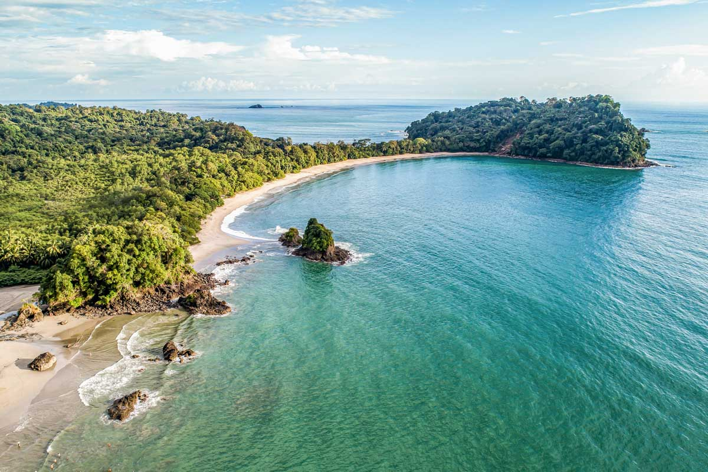

Puntarenas
El Parque Manuel Antonio es uno de los más populares de Costa Rica. Cuenta con una de las mejores playas de Puntarenas en Costa Rica, rodeadas de exuberante vida silvestre. Son impresionantes, por sus arenas blancas y aguas cristalinas, y entre estas se incluyen las de Manuel Antonio, Espadilla Sur y Espadilla Norte.Además, hay muchas oportunidades para disfrutar del ecoturismo, como el hacer senderismo a través de sus increíbles parajes.

La de Montezuma se ubica en el top de las mejores playas de Puntarenas, Costa Rica. Es un paraíso si lo que buscas es alejarte de todo, pues está aislada y ofrece un mar de olas suaves y aguas de azul profundo.También hay muchas actividades para disfrutar en sus alrededores, como caminatas por la selva, la observación de aves y visitas a las cascadas cercanas.

Santa Teresa es una de las playas más populares para los surfistas.Con sus olas retadoras y la belleza natural que la rodea, esta playa atrae a surfers de todo el mundo para poner a prueba sus habilidades. También es un lugar perfecto para tomar el sol y relajarse.